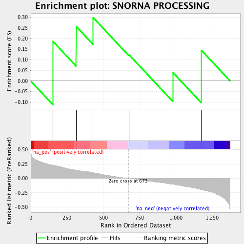

| | | Dataset | ranked_by_GEF.rnk |
| Phenotype | NoPhenotypeAvailable |
| Upregulated in class | na_pos |
| GeneSet | SNORNA PROCESSING |
| Enrichment Score (ES) | 0.29847413 |
| Normalized Enrichment Score (NES) | 0.65755403 |
| Nominal p-value | 0.8893617 |
| FDR q-value | 0.9973813 |
| FWER p-Value | 1.0 |
Table: GSEA Results Summary

Fig 1: Enrichment plot: SNORNA PROCESSING
Profile of the Running ES Score & Positions of GeneSet Members on the Rank Ordered List
| PROBE | GENE SYMBOL | GENE_TITLE | RANK IN GENE LIST | RANK METRIC SCORE | RUNNING ES | CORE ENRICHMENT | | 1 | XRN1 | | | 153 | 0.233 | 0.1862 | Yes |
| 2 | RTF1 | | | 313 | 0.146 | 0.2569 | Yes |
| 3 | RRP6 | | | 430 | 0.099 | 0.2985 | Yes |
| 4 | LRP1 | | | 676 | -0.004 | 0.1246 | No |
| 5 | PAP2 | | | 980 | -0.107 | 0.0396 | No |
| 6 | TRF5 | | | 1176 | -0.194 | 0.1446 | No |
Table: GSEA details [plain text format]
 Fig 2: SNORNA PROCESSING: Random ES distribution
Fig 2: SNORNA PROCESSING: Random ES distribution
Gene set null distribution of ES for SNORNA PROCESSING